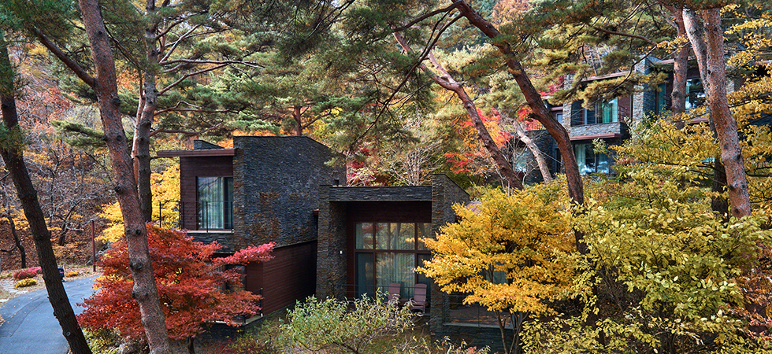

소개
컨셉
대자연에 둘러싸인 프라이빗 산장 빌라
속도가 우선시되고 있는 현대사회에서 '빨리빨리'를 외치던 사람들이 이제 '느리게 살기'를 이야기합니다. 이는 속도에 밀려 잃어가던 것들의 소중함을 깨닫고, 비로소 느린 속도로 살아가기 위한 노력입니다. 이러한 흐름에 따라 우리의 여가 문화도 바뀌어 가고 있습니다. 놀고, 먹고, 즐기기만 하던 소모형 휴식에서 벗어나 몸과 마음의 '쉼'을 통해 에너지를 얻는 충전형 휴식으로 변화하고 있는 것입니다.
울창한 원시림의 아름다운 사계를 즐길 수 있는 포레스트 리솜은 자연을 훼손하지 않는 방식으로 개발된 '친환경 리조트'입니다. 자연지형과 식생을 그대로 보존하고 친환경 자재를 사용하여 자연과 인간이 함께 휴식을 누릴 수 있도록 설계하였습니다. 단지 내에서는 전깃줄과 자동차를 찾아볼 수 없으며 친환경 에너지 이용 및 재활용품 사용을 권장하고 있습니다. 포레스트 리솜에서는 사계절 아름다운 야생화와 다람쥐, 청솔모를 만날 수 있습니다.
구학산, 주론산에 아늑하게 안겨 있는 분지형 구조의 포레스트 리솜은 대한민국에서 손꼽히는 명당입니다. 숲에서 뿜어져 나오는 음이온과 피톤치드는 지친 몸과 마음을 건강하게 합니다.
